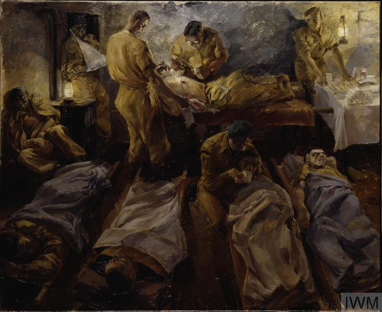

Word War II, the most destructive and bloodiest conflict in history, with an estimated toll of 80 million individuals, approximately 3% of the global population at the time [1]. During that time period the medical field faced tremendous challenges, due to the intensity of the conflict whether that was scarcity of medical equipment's or inefficient skills. The Medical Department was divided into seven fundamental components, each of them having their own function: the Medical, Dental, Veterinary, Sanitary, and Medical Administrative Corps, comprised of officers with commissioned rank, alongside the Army Nurse Corps, whose members held relative rank, in addition, the enlisted personnel were necessary to support the professional staff across these corps [2].
Within the army's infantry divisions, the medical units positioned in buildings and cellars near to the frontline, were staffed with physicians and enlisted personnel. Each of these men were designated as Medical Department personnel within the division troops, their task was to administer medical aid to various units such as the divisions infantry, artillery regiments, machine gun and mortar battalions, engineers, signal units and train units. Medical units came in different sizes, the largest and more significant was the infantry regiment’s aid station that was staffed by 4-7 officers and 31-43 enlisted men, they all provided aid to the sick and injured. Soldiers were expected to treat their initial injury by themselves, which is why each soldier was provided with two gauze bandages, two gauze compresses, and two safety pins. They were taught how to apply their first aid dressing by one of the physicians assigned to their battalion [3].
It is worth mentioning that over 59,000 American nurses were enlisted in the Army Nurse Corps during the Second World War. Due to their roles, they were placed in close proximity to the front lines, within the established by the Army Medical Department “chain of evacuation” to ensure rapid care of injured soldiers from the battlefield to a hospital for better care. Nurses operated under high pressure, in field hospitals, and evacuation hospitals, aboard train and ship hospitals, flight nurses operated on medical transport planes. Due to their immense skills, and unwavering commitment, they contributed significantly to the low post-injury mortality rate specifically within the American military forces across all theaters of the war [4].
| Regimental Aid post | Medical Camps |
|---|---|
| Medical Bag |
Medical Kit |
| Army Nurse Corps |
Medical Staff |
Back to the top